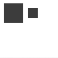

scale
scale(x, y=None)
Increases, decreases or streches the size of all subsequent shape, path, text, image commands. The first parameter sets the horizontal scale, the second parameter the vertical scale. Additionally, the scale() command can be called with a single parameter that sets both the horizontal and vertical scale. Scale values are specified as floating-point (decimal) numbers. The scale() command works incremental: if you call scale(0.5), and later on call scale(0.2), all commands following that second scale() will be sized to 10 percent (0.2 of 0.5).
 |
rect(10, 10, 40, 40)
scale(0.5)
rect(50, 10, 40, 40) |